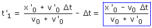
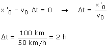

En el apartado anterior hemos obtenido el tiempo que llevaba circulando el segundo tren en el momento del encuentro:  Al aumentar Δt disminuye t'1 y llegará un momento en que este será negativo en cuyo caso no ha-brá choque. El caso límite corresponderá al valor de Δt que hace t'1 igual a cero.  |